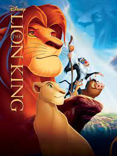

Ben Yunus Emre Karalök Şanlıurfada yaşıyorum 19 Yaşındayım Harran Üniversitesi Bilgisayar Mühendisliği Öğrencisiyim şuan için hangi alana yöneleceğime karar veremesemde aklımda 3 temel alan var bunlar:
Bunun dışında hobilerimi saymak gerekirse bilgisayar oyunlarından ve Aksiyon Bilim Kurgu filimlerini izlemekten zevk alırım en büyük hobim arkadaşlarımla gezmek.
Hearts of Iron IV, Paradox Development Studio tarafından geliştirilen ve Paradox Interactive tarafından yayımlanan strateji oyunudur.
Hearts of Iron serisinin son oyunu olmakla beraber en popüler oyunudur.
Diğer Hearts of Iron serisi oyunları gibi II. Dünya Savaşı'na odaklanır.

Age of Empires II: HD Edition'da, orijinal oyunun hayranları ve yeni oyuncular, klasik Age of Empires II deneyimine aşık olacaklar.
Bin yıllık bir tarihe yayılan 18 uygarlık arasından seçim yapın ve çağlar boyunca dünya hakimiyeti arayışınızda diğer oyuncularla savaşın.
Mount & Blade II: Bannerlord, TaleWorlds tarafından Microsoft Windows platformu için geliştirilen aksiyon-rol yapma oyunu.
Mount & Blade: Warband'in 200 yıl öncesinde geçen oyun önbölüm niteliğinde olup serinin önceki oyunları gibi strateji ve sandbox oynanışı temel almaktadır
Dota 2, Valve Corporation tarafından geliştirilen ve dağıtımı yapılan oynaması ücretsiz bir çevrimiçi çok oyunculu savaş arenası oyunudur.

Kelebek Etkisi, 2004 yılı ABD yapımı bir Dram, bilimkurgu ve gerilim filmi. Başrollerini Ashton Kutcher, Amy Smart, Eric Stoltz paylaşmaktadır.

Upgrade yönetmenliğini ve senaristliğini Leigh Whannell'in üstlendiği, 2018 tarihli ve Avustralya yapımı siberpunk, bilimkurgu, aksiyon ve gerilim temalı filmdir.
Başrollerinde Logan Marshall-Green, Simon Maiden, Betty Gabriel ve Harrison Aksi yer alır
Thor: Aşk ve Gök Gürültüsü, Marvel Comics karakteri Thor'u temel alan, 8 Temmuz 2022'de yayınlanması planlanan bir Amerikan süper kahraman filmi.

Aslan Kral, Jon Favreau tarafından yönetilen bir Amerikan animasyon filmidir. 1994 yılında vizyona giren Aslan Kral'ın yeni bir versiyonudur. Filmde 3D animasyon tekniği kullanılmıştır.
Aslan Kral, vizyona girdiği ilk hafta sonu 185 milyon dolar gişe yaparak ABD'de tüm zamanların Temmuz ayı rekorunu kırmıştır.
Vikings, "Vikingler" tarihsel drama türünde bir Kanada-İrlanda ortak yapımı televizyon dizisi. Yazarlığını ve yapımcılığını Michael Hirst'in yaptığı dizi History kanalında yayınlanmaktadır.
ABD ve Kanada'da 3 Mart 2013 günü yayına başlamıştır.
Lucifer, Tom Kapinos tarafından yaratılan Amerikan fantastik polisiye komedi-drama dizisi. 25 Ocak 2016'da FOX'ta yayımlanmaya başlamıştır.

The Witcher, senaryosu Lauren Schmidt Hissrich tarafından yazılan ve Netflix'te yayımlanan fantezi drama türündeki Amerikan yapımı internet dizisi.
Andrzej Sapkowski'nin aynı adlı kitap serisine dayanan dizinin ilk sezonu 20 Aralık 2019 tarihinde yayımlanmıştır. Dizinin 2. Sezonu ise 17 Aralık 2021'de yayımlanmıştır.

Arcane, Christian Linke ve Alex Yee tarafından Netflix için oluşturulan, yetişkinlere yönelik bir bilgisayar animasyonlu aksiyon-macera akışı televizyon dizisidir